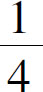
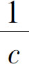
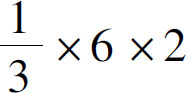
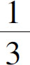

接下来看一下除法的奥秘，我们还是利用之前的桌面和苹果，构建一个除法的场景．首先把3个苹果从上到下一字排开，然后把每一个苹果用水果刀均匀地一分为4，再把切好的4份苹果水平分开放到小盘子里．这样一来，一个3行4列的果盘就展开在我们的面前了．你会说，这3行4列的方阵，它不是乘法吗？这是表示3×4＝12．这就是这个方阵的奥妙了．其实同样一个方阵，我既可以说是3行4列相乘得到了12，也可以说是把12块苹果按照水平方向平均分了3份，每一份就是4块了，同样我还可以认为这是3个苹果平均分成了12块，那么，每一块苹果就是1／4个，在同一个桌面上我们发现了如下两个等式：
12÷3＝4
3÷12＝

于是，我们就得到了除法的第一个性质：如果我们把除数和被除数的位置颠倒了，得到的商就是原来的商的倒数．也就是说：
a ÷b ＝c
b ÷a ＝

接下来我们继续观察这12块苹果，还能得到这样一个性质，无论是12先除以3再除以4，还是先除以4再除以3，总会得到相同的答案1，也就是说，连续相除的一系列除数，任意调换位置以后，最后的商是不会改变的．关于这个特征，我们也可以跟减法的连减操作来做一个对比，如果一个大数连续减去几个不同的小数，那么无论后面的几个数字的顺序如何变动，最后的差也是不变的．对于这个规律，我们也在前文做了详细的介绍．通过观察我们发现，除法跟减法的共同点真的很多．
第一，对于减法而言，减数和被减数翻转以后，得到的新的差和原来的差是互为相反数的．与之对应，在除法当中，如果除数和被除数的位置颠倒了，得到的商和原来的商就互为倒数．
第二，如果一个数字要减去多个数，减数的位置可以任意移动；如果一个数字要连续除以多个数，除数的位置也可以任意移动．
第三，即使减法和加法混合运算，它们的位置也是可以随意调整的，因为我们可以把减去一个正数看作是加上一个负数．同样，除法有类似的性质．
6÷3×2跟6×2÷3的结果一样吗？还真是一样的．原因在于：除法其实也可以当作乘法来看，我们在小学的时候就学过，除以一个数相当于乘以这个数的倒数，因为乘法是存在交换律和结合律的，如果除法变成了乘法，当然也就会有这两个规律．所以，对于一个乘除混合运算的算式，后面的数字和运算就可以任意移动位置了！可惜的是，如果是除法，不能把除数移动到第一个数字的位置上去．这个时候，我们就得参考一下第一条原则了．第一条原则告诉我们，除数和被除数颠倒以后，商是原来的商的倒数，那么，我们把除数变成原来的数的倒数，它也就可以移动到算式的第一个数字上去了呢？再试一试：6÷3×2是不是等于

呢？6÷3×2＝2×2＝4，
×6×2＝2×2＝4，结果完全相同！于是我们就得到了减法和除法的又一个相似的地方，那就是：在一个加减法混合运算的算式中，如果是减数移动到算式的第一位，那么应该把减数变为它的相反数．同理，一个由乘除法组成的混合算式，如果一个除数移动到算式的第一位，那么除数应该变成自己的倒数．
下面应该学习最后一个规律了，除法具有分配律吗？很简单，因为除法可以被看作是乘法，所以它肯定是具有分配律的．不信，我们就试一试：（6＋9）÷3是否等于6和9分别除以3以后再相加呢？6＋9＝15，15÷3＝5，如果分开算：6÷3＝2，9÷3＝3，3＋2＝5．一点没错！
因为加减法和乘法配合的时候有分配律，所以加减法和除法配合的时候也有分配律．
我们学习了减法和除法，虽然它们的性质我们清楚了，但是我们仍然会有这样一种感觉，减法和除法总是不像加法和乘法那样简洁、优雅，比如加法和乘法可以随便换位置，而减法和除法呢？你说它不能吧，如果它出现在算式后面，还可以随便换；你说它能随便换吧，但是它又不能移动到第一位，还必须得先调整一下才行，减法要变个号，除法要变成倒数．那么减法和除法有什么自己的优势吗？还真有！虽然减法中的减数和被减数不能随便换位置，但是如果我们把完整的减法算式列出来就会发现，它的减数和差是可以随便换位置的，比如：5－3＝2，5－2＝3．除法也是一样的，虽然除数和被除数不能随便移动，但是除数却可以和商随便换位置，比如：6÷3＝2，6÷2＝3．
换句话说，在减法或者除法的算式上，挨着减号或者除号的两个数是不能随便换地方的，挨着等号的这两个数可以随便换地方．换作加法和乘法，那可就没这个本事了．不信你就多试几次，那这又是为什么呢？为了研究这个问题，我们不妨通过代数表达式来观察一下．
如果我们把这个a －b ＝c 的减号和等号换一下，就可以得到a ＝b ＋c 吗？由于加法存在交换律，所以b 和c 当然可以随便换位置了．减法和加法互为逆运算，乘法和除法互为逆运算，所以这一点都不奇怪．从这里我们就可以发现：如果是一个算式变形，那么加法和乘法更有优势；而如果是处理等式的变形，那么减法和除法就更有优势了．
其实，减法和除法不只拥有这么一个优势，如果我们再回过头去看一眼，当我们把a －b ＝c 变成a ＝b ＋c 时，前面的等号变成了加号，前面的减号也变成等号，既然是变成等号了，那它就具有等号的协变性．比如等号左右两边同时加减一个数字，这个等式仍然成立，如果我们把这个规律拿到减法上去，你就会发现：减数和被减数同时加上或者同时减去任何一个数字，差不变．不信试试看吧．5－3＝2，如果我们把减数和被减数都加上4，就变成了9－7，是不是也等于2呢？没错，那如果是除法呢？那就是除数和被除数同时乘以或者除以一个数字，结果不变．这个不用验证了，因为分数通分和约分的时候，分子、分母不就总是同时乘以或者除以一个数字吗？这样，我们就得到了减法和除法的第二个优势．
尺有所短，寸有所长．看来，减法和除法的优势还真不少．不过减法和除法真正值得注意的是：任何一个数减去自己都等于0，但0除外，任何数除以自己都会得到1.0和1这两个数字是所有数字的起点，如果说加法和乘法能够让我们远足世界，那么减法和除法就可以让我们回归初心．0和1这两个数字可不简单，刚才讲到加减法和乘除法混合的交换律时，我们不是都觉得别扭吗？加法和乘法都能随便换位置，但是减法和除法就不能换到第一个去，因为任何一个加减法的算式，在它的前面都隐藏着一个重要的数字0，而任何一个乘除法的混合算式，在它的前面都隐藏着一个数字1．这又是什么意思呢？
比如6＋3－5，你以为真的就是6＋3－5，其实它表示的意思是，从0开始往后加，0＋6＋3－5，只要我们让这个0打头，那么后面的所有数字，所有算法就都可以随便挪位置了，只要把0放在开头谁都不敢不服！同样，如果是乘除法呢？在6÷3×2前面隐藏着数字1，也就是1×6÷3×2，只要保持1开头，后面的所有数字也都是可以随意移动的．为什么0和1这么神奇？没办法，这是一切数字的根基，它们两个的地位相当于所有数字的老祖母和老祖父，把祖先排在第一位了，谁敢不服？
我们把加减乘除的性质都认真梳理了一遍．其实这些知识本身并不复杂，即使我们不在这里强调，相信你也懂得交换律、结合律、分配律的道理，但是我为什么要如此大费周折呢？那是因为加减乘除之中，不但包含了我们认识世界的最基本的规律，而且包含着我们每个人人生中最基本的哲理．